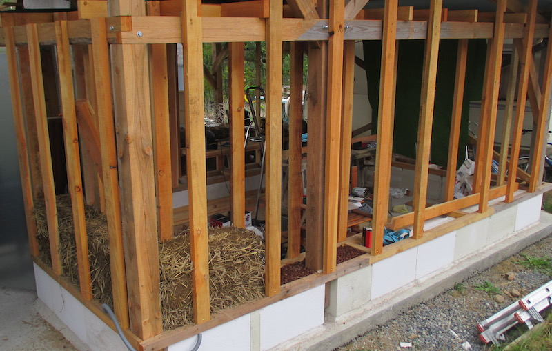

cellulaire.
Image: /atelier1/rep_atelier1-6.jpg
Il nous fallait pour le campement provisoire une pièce fermée et isolée pour pouvoir y mettre le congélateur, le frigo (qui chauffe en été dans le mobilhome et donc surconsomme, ce qui est un problème quand on est sur une installation électrique autonome) et aussi y transférer la batterie solaire qui elle non plus n’aime pas trop la chaleur (sa capacité est prévue pour une température de 25°c, au-dessus sa capacité en Ah diminue).
Ossature
On avait déjà fabriqué la charpente et la couverture du hangar. Il a fallu reconstruire une ossature, qui est fixée sur des blocs de béton cellulaire de 33cm de haut, qu’on a trouvé sur le bon coin en promo (60€ les 60 blocs), un négociant en matériaux qui s’en débarassait parceque ce sont tous des blocs avec un trou dans le sens de la hauteur, destiné à un chainage. En doublant les blocs qui font 20cm de large, on arrive a 40cm de large et les trous sont répartis en quinconce pour ne pas perdre trop d’épaisseur d’isolation.
Les blocs de béton cellulaire sont posés de niveau sur un mortier de chaux, sur la dalle en béton du hangar. Pour fixer les montants d’ossature, on a fixé une lisse avec des chevrons 6/8 sur les bords du soubassement, et là il faut utiliser les chevilles spéciales pour béton cellulaire, qui marchent bien si on fait le trou assez loin du bord du bloc (au moins 3/4 cm).
Quelques traverses en chevrons aussi solidifie la lisse, ça donne une sorte d’échelle couchée. Les traverses forment des petits bacs où on a versé de la pouzzolane, isolante et maintenant la paille au sec si jamais le soubassement prenait l’humidité.
Une fois les menuiseries posées (une porte isolée et une fenêtre récupérée), on peut commencer à poser les bottes de paille.
Les bottes de paille
On a décidé de couvrir l’extérieur des murs en bardage, pas courageux pour l’enduit mais c’est qu’on va en faire plus tard avec la maison de toute façon. Par contre, cela n’empêche pas de réfléchir au comportement des bottes à l’humidité ambiante, à quelques centimètres du bardage, sachant que le mur nord sera le plus exposé.
On a donc suivi la méthode du « french dip » (pour le trempage des croissants dans le café, pratique très française) décrite par Tom Rijven dans son livre « Entre paille et terre », qui , en trempant la bottes quelques secondes dans une baignoire de barbotine, sur les deux faces exposées, lui donne une certaine resistance à l’humidité puisque c’est l’argile qui va jouer le rôle de régulateur, en absorbant l’humidité puis en séchant.
Attention, c’est du boulot, on vous le cache pas… Et les bottes une fois trempées (entre 2 à 5 secondes selon la liquidité du mélange) font rapidement le double ou triple de leur poids). Mais une fois bien organisés, ça tourne :
-
trempage d’une dizaine de bottes par jour, qui vont sécher 24h,
-
tamisage de la terre pour la prochaine baignoire de barbotine
-
remplissage de la baignoire avec environ 1 seau d’eau pour 2 de terre (à tester, ça dépend de votre terre, on cherche une consistance un peu crémeuse). Un coup de malaxeur et la baignoire repose ensuite 24h aussi.
-
pose des 10 bottes de la veille
-
et on recommence …
